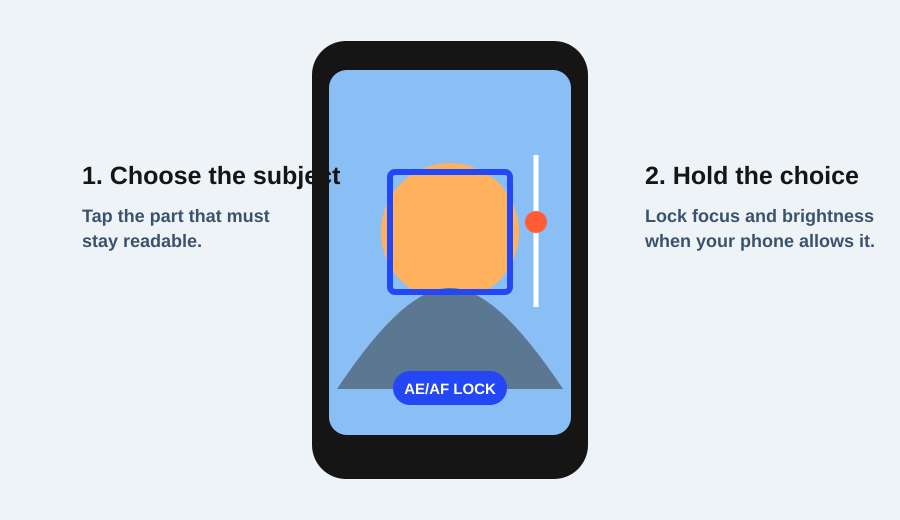

A soft night photo usually has more than one possible cause. The phone may have moved while it captured a longer low-light exposure. The subject may have moved. Focus may have landed on the background. The phone may also have combined several frames and reduced fine detail while trying to brighten the scene.
The fastest diagnosis is to change one condition at a time: stabilize the phone, use the device’s documented night mode if it offers one, check focus, and then test whether the subject is moving. Do not begin by applying sharpening or changing every camera option. A brighter file is not automatically a sharper file.
Start with the phone, not the edit
Google Camera’s Night Sight guidance says that supported devices need to remain still while the mode captures the scene. Pixel support guidance also identifies low light as a common reason for dark, grainy, or blurry results and recommends checking stability and trying the device’s documented low-light options. Availability and names vary by phone, so use the current support page for your model.
For the first test, brace the phone against a firm surface or hold it with both hands and keep your elbows close to your body. Do not press the shutter with a large sideways motion. Make one frame with the phone supported and one with your usual handhold. If the supported frame is noticeably clearer in the lights and edges, camera movement was part of the problem.
This test does not prove that the phone needs a tripod for every night photo. It simply isolates stability before you start changing color, exposure, or sharpness controls.
Use a documented low-light mode when it fits
On supported phones, a Night Sight or night mode can combine information captured over time to produce a brighter low-light image. The phone may show a countdown or ask you to keep still until capture is nearly complete. Follow the on-screen instruction rather than moving as soon as the shutter sound occurs.
Night mode is a good starting point for a static street, building, or landscape scene. It is not a guarantee for a moving person. If the person changes position during the capture, the result can contain ghosting or a soft outline even when the phone itself stayed still.
Make two frames of the same static scene: one with the normal camera view and one with the supported low-light mode. Compare small lights, brick edges, and the darkest readable area. The goal is to see whether the mode improves the scene without inventing detail that was not present.
Check focus before blaming sharpness
In a dark scene, the brightest or highest-contrast object may attract autofocus even when it is not the subject. Tap the intended subject or detail. On supported Google Camera devices, pressing and holding can lock focus and exposure; other apps use different gestures. The current phone documentation is the authority.
Imagine a person standing beneath a streetlight with a bright sign behind them. If the sign is sharp but the face is soft, the phone may have selected the sign as the focus target. Tap the face or the nearest clear edge, then repeat the frame. If the face is still soft while the sign remains sharp, move closer, add light, or simplify the background before reaching for an edit.
Focus lock is useful only when the subject stays near the same distance. If the person steps forward, the locked distance may become wrong. Release the lock and refocus, or use the app’s subject-tracking option if the device documents one.
Separate camera movement from subject movement
Camera movement usually softens edges across much of the frame or creates directional streaks around lights. Subject movement creates a soft or doubled subject while nearby stationary objects remain clearer. These patterns are clues, not laboratory tests, but they help choose the next action.
If the entire street scene is soft, stabilize the phone first. If the building edges are clear but a walking person is blurred, the phone may have been stable and the person moved during capture. A supported phone cannot make a moving person hold still.
For a moving subject at night, add light if possible, shorten the time the subject needs to stay still, or time the frame for a pause. The available controls depend on the phone. Do not promise that night mode, flash, or a manual shutter will behave the same way on every model.
A four-step diagnosis path
Use this order for one scene:
- Stabilize: make a frame with the phone braced or held more securely.
- Select the documented low-light mode: use Night Sight or the equivalent only if the device supports it, and keep still for the full capture.
- Check focus: tap the intended subject; use focus lock only when the distance will remain stable.
- Inspect movement: compare a static detail with the subject. Decide whether the remaining softness follows the whole frame or only the moving subject.
Write down the result after each frame. “Braced phone improved the building but not the person” is a useful diagnosis. “Changed three settings and the result looks different” is not.
A worked streetlight example
Suppose a person is standing beside a shop sign. The first frame is dark and soft. Make a second frame with the phone supported and the low-light mode enabled. If the sign and face both improve, stability and processing were likely involved. If the sign improves but the face remains soft, tap the face and repeat. If the face is sharp when the person pauses but blurred when they move, subject movement is the remaining issue.
At that point, editing can improve tone or contrast, but it cannot recreate a missing sharp edge. Adobe’s deblur guidance is useful for understanding the limits of post-processing: edits can sometimes reduce the appearance of blur, but they do not replace a clear original capture.
When to stop troubleshooting
If every scene is soft in bright and dark light, clean the lens, check whether the issue appears in other camera apps, and consult the device manufacturer’s current support guidance. If only one low-light mode behaves oddly, record the exact mode, scene, and result before looking for an update or support answer.
The goal is not to make every night photo perfectly crisp. The goal is to identify the cause that you can actually change: steadier capture for camera movement, a better focus target for focus errors, more light or a pause for subject movement, and realistic expectations for computational processing.
Research sources
Sources
- Take low light photos with Night Sight — Google Camera Help
- Take high quality photos on your Pixel phone or tablet — Google Pixel Camera Help
- Lock focus and exposure — Google Camera Help
- How to deblur an image — Adobe